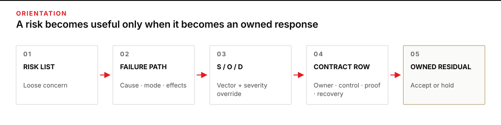
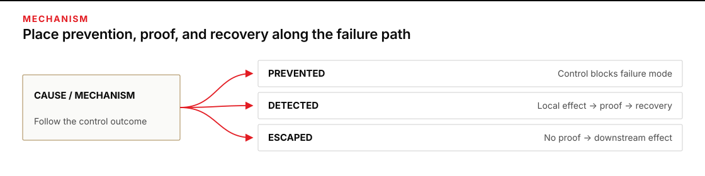
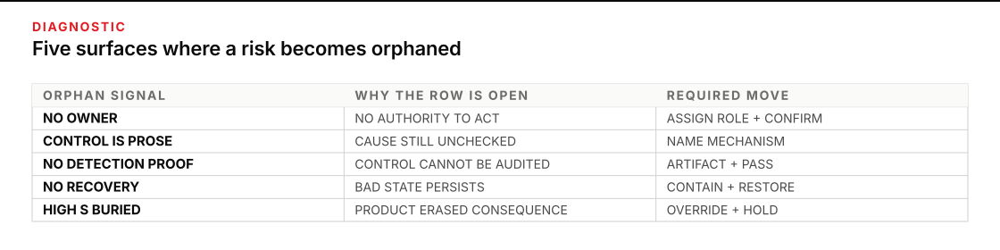

When a risk list still leaves the agent loose
A team lists the obvious risks before an agent runs: wrong source, missing file, bad calculation, action outside scope. The list sounds responsible, but it does not yet say how a failure travels, which control should interrupt it, what evidence proves the control ran, who owns the response, or how to recover. Under pressure, those missing parts become somebody else’s problem.
Give this work 60–75 minutes. You will leave with an FMEA-to-contract table for one agent task. Each row will trace a failure mode from cause through local and downstream effects, keep severity, occurrence, and detectability visible, and name a preventive control, detection evidence, owner, recovery or rollback, and any residual orphan risk.
Write and run the autonomy contract in P6 · The watch officer first; it establishes the distinction among the bounds a tool enforces and the promises people keep. Continue when you need to discover which contract rows are missing and whether the rows you have can survive a failure.

Figure transcript
Stage one records a loose risk such as wrong source or unauthorized action. Stage two separates cause, failure mode, local effect, and downstream effect. Stage three keeps severity, occurrence, and detection difficulty visible as an S/O/D vector with a severity override instead of hiding them in one product. Stage four adds the contract bearings: owner, preventive control, detection evidence, and recovery or rollback. Stage five records residual risk and either its authorized acceptance or the reason the task remains on hold.
Turn each risk into a failure path and a response contract
Failure mode and effects analysis, or FMEA, is a structured way to ask how a function might fail and what follows. IEC 60812 describes a method that is planned, performed, documented, and maintained: identify modes of failure, their local and global effects, possible causes, and treatments. It explicitly applies to software, processes, human action, and their interfaces—not only hardware.
For agent work, start with a function written as a verb and an object: “assemble one draft release packet from current signed records.” A failure mode is the way that function is lost or corrupted: “packet joins records from two assets.” A cause or mechanism explains how that state arose: “the join used a shortened filename instead of the full asset identifier.” Keep the two separate. “Hallucination” is usually too broad to be either one.
Then trace two effects. The local effect is what changes at the failed step: the packet contains the wrong inspection report. The downstream effect is what another system or person may experience: a unit could be released on evidence that belongs to a different unit. NASA’s 2024 FMECA handbook separates cause, mode, and effects at local, next-level, and ultimate levels for exactly this reason. A harmless-looking local error can propagate into a serious system effect.
Put controls where they can change the path
A preventive control acts on the cause or removes the conditions that produce the failure mode. Exact-key matching, read-only source copies, schema checks, and draft-only destinations are examples. A detection control exposes the failure before or after it occurs. The UK Forensic Science Regulator’s validation guidance uses the same practical chain in its process-FMEA form: step, mode, effect, cause, prevent/detect controls, ratings, and actions. Use a stricter field—detection evidence—because “the system checks” is not inspectable. Name the artifact and the passing condition: “join manifest lists full asset ID and serial for every attachment; mismatch count = 0.”
Recovery or rollback begins after detection. It says how to contain the bad state, preserve useful work, restore a known-good state, and decide whether to resume. Detection without a reaction path creates an alarm, not a controlled system. NASA’s handbook ties FMECA to fault detection, isolation, recovery, mitigation verification, and control plans; its example control-plan fields require verification documentation and a reaction plan, not only a claimed safeguard.
Finally, name an owner: a person or role with the authority and access to carry out the row. “Team” and “operator” are placeholders unless one named role can accept the residual risk, invoke the recovery, and decide what happens next. The NIST AI Risk Management Framework calls for clear roles, documented residual risk, assigned responsibility for deactivation, and response and recovery plans. Those duties become concrete columns here.
Use ratings as prompts, not measurements
Use this 1–5 rubric to compare rows in one analysis. The numbers are ordinal categories: 4 means more concerning than 3 under these anchors. It does not mean twice the risk of 2, and an occurrence rating is not a measured probability unless data and a calibrated mapping support that claim.
| Rating | Severity (S) | Occurrence / likelihood (O) | Detection difficulty (D) |
|---|---|---|---|
| 1 | Negligible, local, readily reversible | Not observed in representative use; strong prevention is evidenced | Deterministic proof before any downstream effect |
| 2 | Limited rework; no external commitment | Credible only under an unusual trigger | Strong pre-effect check with a visible record |
| 3 | Material rework or bounded downstream disruption | Plausible under normal variation or seen as a near miss | Partial, sampled, or manual check before use |
| 4 | Major operational, financial, privacy, or mission effect | Known weak condition appears in ordinary work | Usually found from a downstream symptom |
| 5 | Safety, legal, irreversible, or unauthorized authority effect | Recurring under expected inputs, or a common trigger with no effective prevention | Likely invisible until the effect is difficult to reverse |
Write the evidence behind each rating beside the row. “O = 2 because the last 200 representative packets had no identity mismatch and the exact-key validator was enabled” is a bounded judgment. “O = 2, therefore 20%” invents a probability.
Do not let multiplication erase a dimension
Conventional FMEA often multiplies severity, occurrence, and detection to produce a risk priority number: RPN = S × O × D. Keep it only as an optional sorting hint. The product has three important weaknesses:
- The categories are ordinal, so the distance from 1 to 2 is not known to equal the distance from 4 to 5. Multiplication implies more arithmetic meaning than the ratings contain.
- Different risk shapes produce the same number.
5 × 1 × 2and2 × 5 × 1both equal 10, although one carries a catastrophic consequence and the other does not. - A low occurrence or detection rating can mathematically bury high severity, even when the rating rests on little data or optimistic judgment.
A peer-reviewed validity study of two hospital FMEAs found incomplete mode coverage, poor agreement between team scores and incident data, and a mathematical problem with multiplying ordinal scales. Its domain and small sample limit generalization, but the scoring critique applies directly to the arithmetic. The official VDA whitepaper on the joint AIAG/VDA method states that action priority replaces RPN and pairs that change with revised severity, occurrence, and detection tables.
Use four rules instead:
- Keep the vector visible: record
S/O/D, not only the product. - Apply a severity override: any S = 5 row, irreversible effect, or unauthorized exercise of authority cannot enter unattended use without a named owner, prevention, pre-effect detection evidence, and recovery—or explicit acceptance by the proper authority.
- Inspect contract completeness: a high score does not repair a blank owner, weak control, missing proof, or absent rollback.
- Preserve residual risk: after controls, record what can still happen and who may accept it. Do not lower ratings merely because a control is planned.
An orphan risk is a credible failure path that has no complete response chain. It may be missing an owner, prevention, detection evidence, recovery, or authorized residual-risk decision. A polished table can still be full of orphans.

Figure transcript
Begin with a credible cause or mechanism. A preventive control can block the failure mode before it occurs. If prevention fails, the function enters the failure mode and creates a local effect. Detection evidence is evaluated between that local effect and downstream propagation. When an inspectable artifact trips its failure condition, the named owner contains the state, restores known-good work, and decides whether restart is allowed. When detection is absent or misses, the local effect escapes into the downstream effect. This intercepted-versus-escaped branch is why detection evidence and recovery cannot be collapsed into one control claim.
Worked case: the maintenance packet that looks ready
A synthetic maintenance group wants an agent to assemble draft release packets. The agent reads signed inspection reports, work orders, and an asset register. It writes only to a draft area. A release authority—not the agent—decides whether equipment returns to service.
The function is: assemble one complete draft packet for one asset from current signed records without changing sources or representing release authority. The first risk list says:
- wrong asset records;
- superseded inspection used;
- required evidence omitted;
- draft mistaken for an approved release.
The dry-run record supplies the rating context. Two of 120 input sets contained abbreviated duplicate prefixes. Seven contained current and superseded reports, and one trial selected the stale report by filename. Current release review samples titles, filenames, and visible revision labels; it does not reconcile every attachment to authoritative keys. No draft reached the release surface in 50 trials, but inheriting the prior destination was a normal configuration path and no pre-effect destination record existed. These observations are not field probabilities.
The ratings below describe the state before the proposed controls are verified. After implementation, the team will preserve these ratings and record a separate residual assessment.
| ID | Failure path | Initial S/O/D | Preventive control | Detection evidence | Owner + recovery | Residual / orphan risk |
|---|---|---|---|---|---|---|
| M-01 | Mode: records from two assets are joined. Local: wrong inspection appears in packet. Downstream: release may rest on another unit’s evidence. Cause: filename-prefix match instead of full asset ID plus serial. | 5/2/3 S5 wrong-unit release · O2 two unusual triggers · D3 sampled manual review High-severity override | Require exact equality on asset ID and serial; reject aliases not in the signed map. | join_manifest.csv lists both keys for every attachment; mismatch and unmatched counts both equal 0. | Records steward. Quarantine packet, invalidate its manifest, correct the identity map, rebuild from unchanged sources, and obtain release-authority review before reuse. | Legacy reports with no serial remain unmatched. Row stays open until the steward resolves or excludes them. |
| M-02 | Mode: superseded inspection is selected. Local: packet carries stale status. Downstream: unresolved work may be treated as complete. Cause: newest filename chosen instead of the authoritative revision state. | 4/3/3 S4 unresolved work · O3 stale selection observed · D3 sampled revision review | Select only a signed record marked current in the authoritative index and inside the task’s as-of time. | source_manifest.csv records revision, signature state, index status, and as-of time; every row must equal CURRENT + SIGNED. | Maintenance records owner. Hold the packet, replace the source, rebuild, and diff the old and new manifests. | The index itself may lag a late revocation; owner must define the acceptable freshness window. |
| M-03 | Mode: draft appears in the release surface. Local: unapproved packet looks final. Downstream: equipment could be returned to service without authority. Cause: output destination is inherited from a prior approved run. | 5/3/4 S5 unauthorized release · O3 inheritance is normal variation · D4 downstream symptom only High-severity override | Resolve the target before the first write; reject it unless it is below a fixed allowlisted draft root; stamp every page DRAFT. | run_manifest.json records the resolved path and prewrite_path_check=PASS before output, with release attempts = 0; release ledger has no new entry. | Release authority. Hold the asset; stop the run; withdraw the packet; if service resumed, recall the asset and start incident notification; verify actual equipment status; restore the register to non-released; decide whether restart is allowed. | A person could manually copy the draft into a release surface. This remains outside the agent control and needs an explicit authority decision. |
Diagnostic example: product-only ranking hides the release risk
Before the table above was repaired, the first analyst multiplied the ratings. M-02 was scored 4/3/3 = 36, while M-03 was scored 5/1/2 = 10. The table sorted M-02 to the top. Because M-03 looked numerically small, its owner and recovery cells remained blank; “tell the agent not to publish” was entered as its only control.
M-03 blocks unattended use first. Its S = 5 effect cannot be traded away, and owner and recovery are blank. Its O = 1 and D = 2 ratings are unsupported: no prevention was evidenced, destination inheritance is normal variation, and no pre-effect record exists. Re-anchored, the uncontrolled condition is 5/3/4 = 60. The jump from 10 to 60 exposes how fragile the product is to optimistic ratings.
Recovery corrects the vector to 5/3/4, marks the severity override, and adds the fixed draft root plus pre-write rejection. The release authority places the asset on hold, withdraws the packet, checks actual equipment status, recalls it and starts incident action if service resumed, restores a non-released state, and owns restart. Only a later verified run may support lower O or D in a separate residual assessment; the manual-copy risk remains visible.
The unusual lesson is that M-03’s low occurrence estimate is partly a statement about the controls the row did not yet have. Ratings and controls can become circular: “unlikely because we control it,” followed by a blank control cell. Evidence breaks that circle.

Figure transcript
NO OWNER means nobody has the authority and access to act; assign a role and confirm authority. CONTROL IS PROSE means the stated safeguard does not identify a mechanism acting on the cause; replace it with a specific preventive control. NO DETECTION PROOF means a check is claimed without an artifact and passing condition; name both and test them. NO RECOVERY means detection can occur while the bad state persists; write containment, restoration, and restart authority. HIGH SEVERITY BURIED means an RPN product has obscured an S equals 5, irreversible, or unauthorized-authority effect; restore the S/O/D vector, apply the severity override, and hold until the response chain is complete or the proper authority accepts the residual risk.
Build the contract for a replenishment-draft agent
Plan 20–25 minutes. A synthetic agent reads an inventory snapshot, a supplier catalog, and reorder rules. It may write draft/restock.csv. It may not place an order, enter an outbound purchasing queue, or change source records.
Use these supplied conditions. Do not add facts:
| Candidate failure | Known condition | Potential downstream effect |
|---|---|---|
| A · stale stock snapshot | One of 20 trial snapshots was 31 hours old. The rule requires no older than 24 hours. No freshness check exists; review notices staleness only when a draft duplicates an open request. | Review time is lost and a copied draft could become a duplicate order. |
| B · case/each conversion | The catalog uses CASE while the rule uses EACH. Two of 80 trial lines lacked a conversion. No total limit exists; current review sees the error only after a supplier acknowledgment or budget exception. | A 12× quantity exceeds delegated purchasing authority and could become an unauthorized commitment. |
| C · draft enters outbound queue | The prior process wrote approved files to outbound/. The agent inherits a configurable destination. No write occurred in 50 dry runs, but destination choice is not logged; the first signal would be a queue receipt. | A purchasing system could treat an unapproved draft as an order. |
- For A, B, and C, write the function loss as a failure mode. Keep the cause separate.
- Trace the local and downstream effects. Assign S, O, and D from the supplied rubric and cite the condition behind each rating.
- Mark every severity override before calculating any optional RPN.
- Add one preventive control, one exact detection artifact and pass condition, one owner, and one recovery or rollback.
- Circle every orphan. A row remains orphaned if a cell says “monitor,” “review,” “be careful,” or “the agent should” without a mechanism, artifact, condition, and actor.
Stop condition: do not run even a synthetic unattended trial if any S = 5 row lacks prevention, pre-effect evidence, an owner, or recovery. Keep the task draft-only. No order may leave the exercise.
- A: Mode/cause: stale state enters because age is unchecked. Local/downstream: duplicate line → possible duplicate order. 3/3/4; no override: bounded disruption, stale trial input, downstream-only signal. Control/proof: reject age >24 hours; manifest records source time, age, and
fresh=true. Owner/recovery: data owner quarantines, refreshes, rebuilds, and diffs. Residual/status: a false source timestamp remains; HOLD until freshness proof passes. - B: Mode/cause: quantity uses the wrong unit because conversion is missing. Local/downstream: 12× line → unauthorized commitment. 5/3/4; override: authority effect, observed missing maps, downstream-only signal. Control/proof: reject absent mappings; conversion manifest and line/total bounds all pass. Owner/recovery: rules owner invalidates, corrects, rebuilds, and sends the delta to purchasing authority. Residual/status: a wrong authoritative mapping remains possible; HOLD pending source-owner confirmation and proof.
- C: Mode/cause: draft reaches outbound because destination is inherited. Local/downstream: unapproved queue item → possible order. 5/3/4; override: authority effect, normal configuration path, queue-receipt signal. Control/proof: fixed allowlisted draft root with pre-write rejection; manifest records resolved path,
path_check=PASS, and zero outbound attempts. Owner/recovery: purchasing authority stops, withdraws, reconciles queue and supplier state, then owns restart. Residual/status: manual copying remains; HOLD until path test and rollback rehearsal pass.
Another rating is defensible only if it maps to a supplied condition; do not invent a control or observation. S = 5 for B and C survives any reasonable O or D disagreement.
Copy the FMEA-to-contract table
| ID | Function / step | Failure mode | Local effect | Downstream effect | Cause / mechanism | S | O | D | Severity override? | Owner | Preventive control | Detection evidence + pass condition | Recovery / rollback | Residual or orphan risk | Decision / status |
|---|---|---|---|---|---|---:|---:|---:|---|---|---|---|---|---|---|
| FM-01 | | | | | | | | | YES / NO + reason | | | | | | HOLD / TEST / ACCEPTED BY [AUTHORITY] |
Rating evidence:
- S:
- O:
- D:
Original assessment date / scope:
Control verification artifact and date:
Residual assessment (do not overwrite original):
Change or incident that forces this row to be reopened:Acceptance rules for each FMEA row
- Keep high severity visible even when the score product is low;
5/1/2can carry a consequence that3/3/3does not. - Replace “validate every packet” with an inspectable artifact, exact pass condition, timing, and response when the condition fails.
- A passing detection test does not own the risk when recovery is blank. Name the authorized owner and rollback.
- Do not lower occurrence or detection ratings for a planned control. Verify the implemented control, then record a separate residual assessment.
- Walk the interfaces between source ingestion, agent reasoning, and downstream use. Complete rows cannot compensate for an unlisted failure path.
Put one low-consequence desk task under failure analysis
Choose a real agent task that currently produces a draft, summary, classification, or recommendation. Work from a copy of the inputs and keep the output in a draft-only location. Time-box 30 minutes. Write one clear function, identify three to five failure modes, and complete the table without asking the agent to score itself.
Stop when every credible row has a visible S/O/D vector, a severity-override decision, prevention, evidence, owner, recovery, and a residual-risk statement. Also stop when the time box ends; a short table with named orphans is more useful than a polished fiction.
Return to a human authority before any live run that can affect safety, legal position, personnel, money, access, privacy, external communications, or an irreversible record. Return as well when S = 5, rollback is unproven, the required evidence cannot be produced before the effect, owners disagree, or accepting the residual risk exceeds your role. Bring the exact failure path and the incomplete cells. “Risk is high” is vague; “the draft can enter the purchase queue, no pre-commit evidence exists, and purchasing authority owns the decision” is actionable.
Treat the table as a living record. Reopen a row when the task, source, tool surface, downstream consumer, incident history, or control evidence changes. NASA’s FMECA guidance explicitly treats the analysis as living work that changes with design, operations, test data, and new knowledge. A stale FMEA is a risk list wearing an old date.
Sources
- NASA GSFC · Guideline for Failure Modes and Effects Analysis and Risk Assessment — active handbook page and document status.
- NASA GSFC-HDBK-8004 · FMECA handbook — cause/mode/effect definitions, local-to-global propagation, detection, prevention, recovery, worksheets, and control plans.
- IEC 60812:2018 · Failure modes and effects analysis — international standard scope, local and global effects, maintenance, software, process, and human-action applicability.
- UK Forensic Science Regulator · Validation guidance — a process-FMEA template linking steps, modes, effects, causes, prevent/detect controls, ratings, and actions.
- VDA QMC · AIAG & VDA FMEA Handbook whitepaper — action priority, revised S/O/D tables, assigned actions, and effectiveness confirmation.
- Shebl, Franklin & Barber · Failure mode and effects analysis outputs: are they valid? — a two-hospital case study of mode coverage, score validity, and ordinal multiplication limits.
- NIST · AI Risk Management Framework 1.0 — documented roles, residual risk, deactivation responsibility, monitoring, response, and recovery.